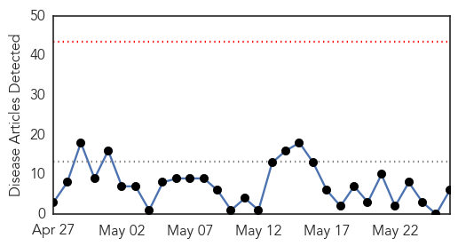
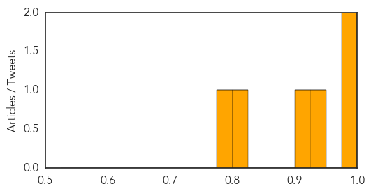

Measles
30-Day Web Trend
0 alerts, 0 warnings

30-Day Twitter Trend
0 alerts, 0 warnings

Article Locations

Article Confidences
Top Articles:
- 1.000
- MERS virus considered low risk in Pa.
- 0.990
- Little concern in area about MERS
- 0.938
- Measles outbreaks spotlight need for national registry
- 0.915
- Second measles case forces Allegheny County health dept. to issue alert
- 0.801
- Marshall Islands on high alert after measles outbreak in Federated States of Micronesia
- 0.795
- AAP endorses report on improving global immunization systems
Top Tweets:
-
No tweets found for May 26, 2014
Dengue Fever
30-Day Web Trend
0 alerts, 0 warnings
30-Day Twitter Trend
1 alerts, 0 warnings

Article Locations

Article Confidences

Top Articles:
-
No articles found for May 26, 2014
Top Tweets:
-
No tweets found for May 26, 2014